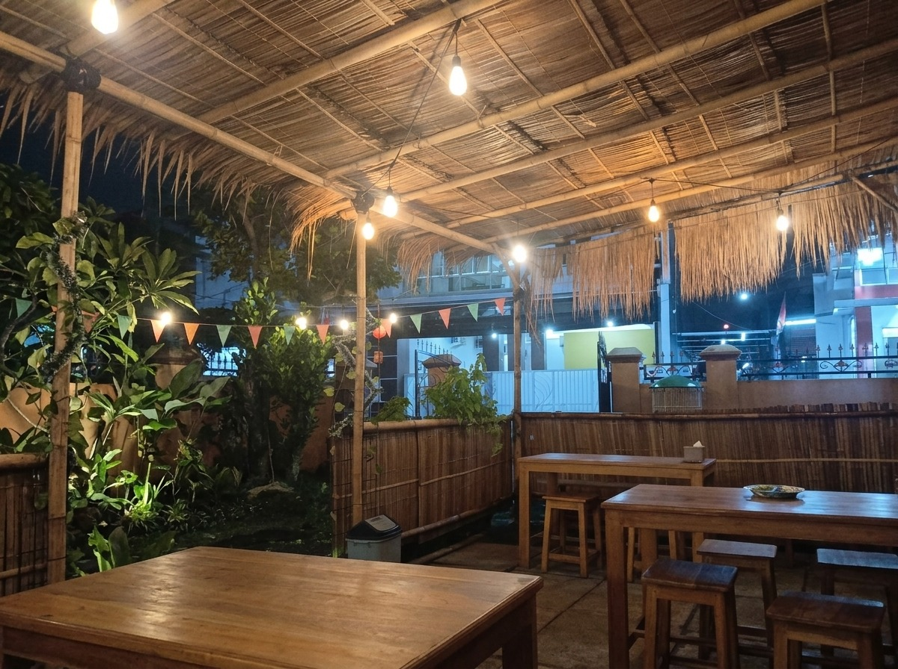
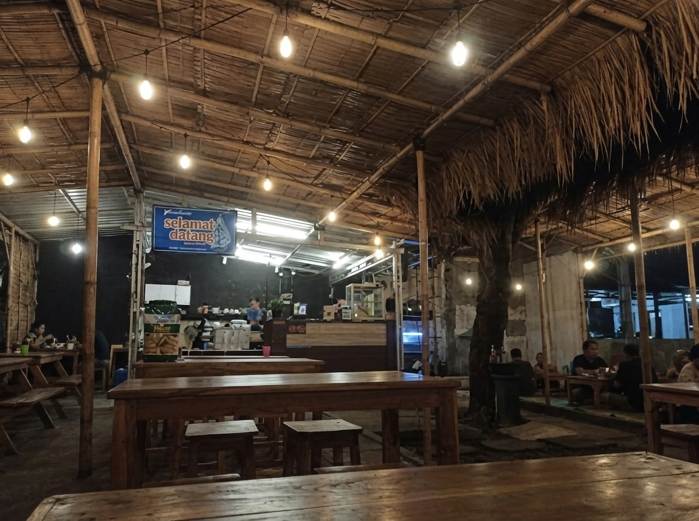

1. Kuliner Rakyat Ramah Kantong
Menu lengkap dan mengenyangkan dengan rentang harga bersahabat mulai dari Rp 3.000 hingga Rp 20.000. Pilihan hemat dan lezat untuk mahasiswa, warga lokal Colomadu, maupun keluarga.
Nikmati sensasi nongkrong semi-outdoor beratap anyaman bambu yang asri dan sejuk di Colomadu, Solo Raya. Punakawan Space & Eatery menghadirkan 9 Menu Best Seller otentik, Paket Nasi Kremesan Gurih Gratis Es Teh mulai Rp 12.000, sensasi pedas Wonton Basah, hingga kehangatan rempah alami Wedang Punakawan. Tempat kuliner rakyat harga bersahabat dekat kampus UMS!

Kombinasi sempurna suasana hangat semi-outdoor beratap bambu tradisional khas Jawa dengan hidangan kuliner rakyat lezat berstandar rasa istimewa.
Menu lengkap dan mengenyangkan dengan rentang harga bersahabat mulai dari Rp 3.000 hingga Rp 20.000. Pilihan hemat dan lezat untuk mahasiswa, warga lokal Colomadu, maupun keluarga.
Konsep semi-outdoor beratap anyaman bambu dengan sirkulasi udara bebas gerah, deretan meja kayu lapang, fasilitas colokan listrik, dan parkiran aman untuk nugas santai atau kumpul komunitas.
Dari racikan Mie & Nasi Goreng Spesial rempah Jawa, Spagheti Warmindo, Wonton Basah kuah gurih pedas, hingga kesegaran Es Teh Tarik dan khasiat seduhan Wedang Punakawan rempah asli.
Menu andalan paling diburu pelanggan setia Punakawan Space & Eatery. Terdiri dari 3 Menu Makanan, 3 Menu Minuman, dan 3 Menu Snack pilihan!
3 Papan menu resmi berlatar Teal Punakawan dan berbingkai emas sesuai poster asli di lokasi. Transparan, hemat, dan bersahabat!
Nasi Putih, Kremesan, Sambal, Lalapan & Teh/Es Teh
11 Aneka Camilan Renyah & Lezat
26 Pilihan Minuman Segar, Kopi & Rempah
Pesan lezatnya kuliner rakyat Punakawan Space & Eatery langsung dari rumah atau kos. Praktis, banyak diskon, dan pengantaran cepat ke seluruh kawasan Colomadu & Solo Raya!
Pilihan terfavorit dengan ribuan mitra driver Gojek di area Colomadu. Menu dijamin tetap hangat dan higienis sampai di meja makanmu.
Buka GoFood SekarangMakin hemat dengan segudang voucher diskon merchant, cashback koin Shopee, dan voucher gratis ongkir tanpa syarat minimal yang menguntungkan.
Buka ShopeeFood SekarangPaling seru untuk pesanan rombongan bareng teman kos. Nikmati paket bundling hemat, diskon kilat, dan layanan GrabFood Priority.
Buka GrabFood SekarangRuang nongkrong semi-outdoor yang sejuk, nyaman, dan ramah untuk segala kebutuhan: mulai dari nugas santai, meeting santai, hingga bukber dan gathering komunitas.
Suasana malam yang asri beratap anyaman bambu tradisional Solo Raya dengan semilir angin sejuk bebas pengap, meja kayu panjang, dan pencahayaan hangat yang menenangkan.

Area kasir dan pemesanan yang responsif serta tata letak meja lapang yang mampu menampung rombongan teman kos, keluarga besar, maupun gathering organisasi kampus.
Punakawan Space & Eatery didesain khusus agar setiap pengunjung merasa betah berlama-lama. Berlokasi di jalur strategis Colomadu yang mudah dijangkau dari kampus UMS, Kartasura, maupun pusat kota Solo.
Formulir otomatis terhubung langsung ke WhatsApp resmi Punakawan Space & Eatery.
Kawasan Colomadu di perbatasan barat Surakarta kini berkembang pesat sebagai salah satu sentra hunian dan pusat aktivitas mahasiswa, terutama karena letaknya yang berdampingan langsung dengan kawasan kampus Universitas Muhammadiyah Surakarta (UMS). Namun, mencari tempat nongkrong murah Colomadu yang tidak hanya terjangkau tetapi juga memiliki konsep ruang yang nyaman, sejuk, dan tidak pengap sering kali menjadi tantangan tersendiri.
Hadir sebagai jawaban atas kebutuhan tersebut, Punakawan Space & Eatery menghadirkan konsep perpaduan warmindo modern dengan sentuhan heritage Jawa. Dengan bangunan semi-outdoor beratap anyaman bambu alami dan jajaran meja kayu luas, suasana di Punakawan membawa kehangatan tersendiri saat malam tiba. Angin sejuk Solo Raya yang leluasa berhembus membuat pengunjung betah berlama-lama, baik untuk berdiskusi tugas kuliah maupun bercengkerama santai bersama rekan kerja.
Salah satu daya pikat utama yang menjadikan warmindo Punakawan Colomadu viral di kalangan anak muda adalah menu andalannya. Tersedia 9 Menu Best Seller pilihan yang mencakup 3 Menu Makanan (Mie Goreng Spesial Punakawan, Nasi Goreng Spesial, dan Spagheti Warmindo), 3 Menu Minuman legendaris, serta 3 Menu Snack gurih renyah.
Bagi yang menginginkan santapan kenyang hemat, menu paket nasi gratis es teh Colomadu menjadi solusi terbaik. Mulai dari Rp 12.000 saja, Anda sudah mendapatkan seporsi nasi putih hangat bertabur kremesan gurih melimpah, sambal pedas segar, lalapan, lauk pilihan (seperti Ati Ampela, Lele Goreng, Bandeng, hingga Ayam Goreng), dan segelas Es Teh manis segar tanpa biaya tambahan!
Bagi pecinta camilan kekinian dengan citarasa pedas gurih menantang, wonton basah Colomadu di Punakawan Space & Eatery adalah menu yang tidak boleh dilewatkan. Olahan pangsit isi daging ayam lembut disiram racikan kuah kaldu rempah dan chili oil gurih, dilengkapi sayuran pakcoy segar dan kerupuk pangsit renyah seharga Rp 12.000 per porsi.
Setelah menyantap hidangan pedas atau saat udara malam Colomadu mulai dingin, kehangatan wedang Punakawan menjadi teman terbaik. Diracik dari jahe merah geprek bakar asli, batang serai wangi, dan perasan jeruk nipis segar, minuman tradisional berkhasiat ini terbukti ampuh menyegarkan tenggorokan dan menghangatkan badan dengan harga hanya Rp 10.000.
Punakawan Space & Eatery juga memahami mobilitas tinggi para mahasiswa dan warga perumahan di Solo Raya. Karena itu, seluruh sajian lezat ini dapat dipesan secara praktis melalui gofood shopeefood grabfood punakawan colomadu. Hanya dengan beberapa klik di ponsel pintar, pesanan Anda akan diantar langsung dalam kondisi tetap hangat dan higienis ke kos atau rumah.
Bagi Anda yang berencana mengadakan acara kumpul komunitas, rapat organisasi, buka puasa bersama, atau sekadar booking meja di jam sibuk tanpa antre, fitur formulir WhatsApp resmi di website ini memungkinkan konfirmasi instan dalam hitungan detik. Kunjungi tempat nongkrong dekat UMS Colomadu ini dan rasakan sendiri kehangatan kuliner rakyat berkelas!